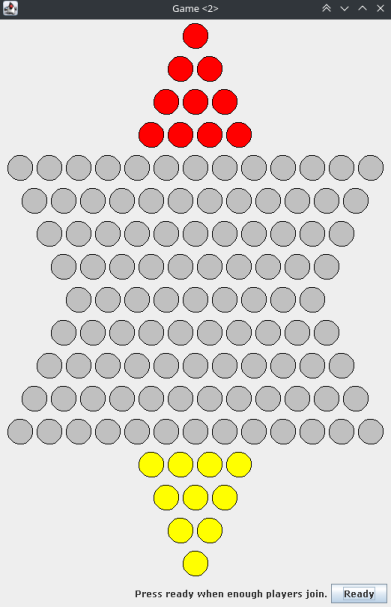

Chinese Checkers
Recreation of chinese checkers using java and awt. Project that involved making whole client-server setup with proper cheating checks. Flexible program interface allowed for inclusion of new user interfaces or connection methods. Game also had possibility of saving games to the database with possibility of loading sessions for specific users.
Github link: https://github.com/Jan-Wolski/Chinese-Checkers
